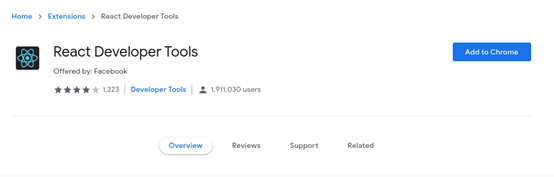
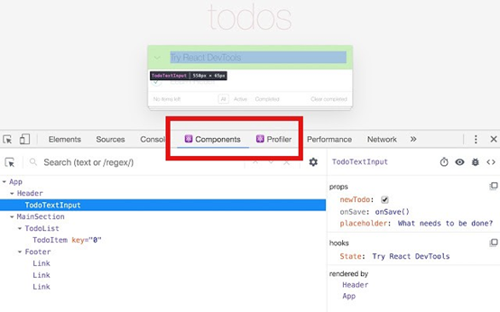
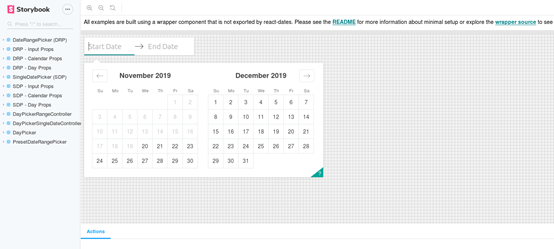
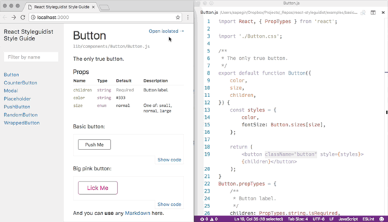
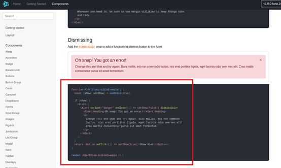
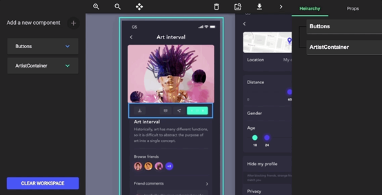
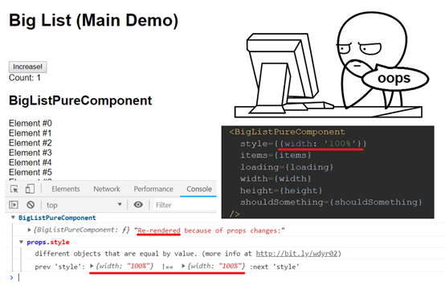

本文由葡萄城技术团队翻译并首发
转载请注明出处：葡萄城官网，葡萄城为开发者提供专业的开发工具、解决方案和服务，赋能开发者。
JavaScript每天都在出现大量的框架和工具，而React是除了上次我们提到的Vue和Ember之外另一款比较流行的框架。但因为新的工具每天都在不断的出现，开发者在尝试时总会有些不知所措。
因此，当为你的新React项目选择合适的IDE，合适的可视化工具甚至是合适的样式时，你都会有很多选择，你该怎么选择合适的？这是一件令人犯愁的事儿。
在本文中，我将介绍11个关于React的开发工具，以帮助你选择以及带你了解如何用它们来使你更充分的使用框架。
我们将从React开发人员最受欢迎的工具之一的Chrome React Dev Tools开始说起，它是一个Chrome 扩展程序，最近它发布了它的v4版。


安装完成后，打开Chrome的开发人员工具你就能看到多出了Components和Profiler选项卡，“Components”选项能帮助你查看屏幕上组件列表以及从其他组件派生出的子组件，你能够选择检查甚至编辑组件的状态和属性。使用“Profiler”选项卡，你也可以评估应用程序的性能。
这两个选项都可以在Chrome DevTools选项卡上找到，为了能更好的体验该插件的功能和特性，你可以使用这个在线站点去体验。
除了上面的扩展外，我们需要提到另一个Chrome 扩展程序React Sight，它可以帮助你在检查React应用程序时发挥作用。
在安装DevTools后，在你已经在React Dev Tools和React Sight的扩展设置中启用了“允许访问文件URL”选项，你就可以在DevTools种找到一个新的名为“React Sight”的标签，当你运行本地程序时，你将可以使用React Sight以可视化树状的形式查看和创建不同的组件，这将让你能够方便的理解它们的连接方式，在你把鼠标悬停在元素上时，就可以看到它们当前的状态和属性。
到目前为止，Visual Studio可能是JavaScript开发人员最喜爱的IDE之一。这里说的是之一而不是唯一，因为有很多不错的其他IDE也非常棒，例如Sublime，IntelliJ和Vim。
但在这里我们就不再展开了，这所以这里提到了VS，是因为VS背后有着强大的社区，所以让我们看看React Extension Pack。
本质上，它是一组为完成与React相关任务的扩展包，在一般情况下，VS在解析和在做一般JS需求时做的很出色，但这个小工具套包将它带入了一个新的高度。在这个包里，你将找到：
一共是7个扩展，它们分别为项目提供了一些价值，安装这个扩展包，你可以从VS的命令面板使用以下命令（使用CTRL + P打开它）中轻松进行安装：
ext install jawandarajbir.react-vscode-extension-pack
React是为了帮助你以非常直观的方式编写UI而设计的。但必须通过写代码才能创建可视的组件并不是真正自然的事情，这就是为什么我们通常会从代码跳到浏览器，然后再回到代码。
Storybook是一个开源工具，它可以用来开发自己的UI组件。它不仅仅只是一个代码库，他们的在线UI编辑器允许你开发、检查并最终以交互的方式展示你的作品(这在开发可视化组件时是至关重要的)。

为了将Storybook安装到你现有的React项目中，你所要做的就是：
$ npx -p @storybook/cli sb init
该命令将检查你项目的结构，并尝试了解你正在使用的视图层（因为Storybook支持React以外的其他视图层，例如Vue，Angular等）。
命令完成后，您可以通过运行以下命令运行Storybook：
$ npm run storybook
这是另一个非常有趣的交互式工具，可让您创建和展示您的UI组件。

请仔细查看上图。在右侧，你可以看到实际的代码，它在左侧生成UI。你可以通过这种方式展示UI，甚至可以通过直接在显示的界面上更改代码来对其进行测试和编辑UI。
为了将其包含到你的React项目中，你所需要做的就是(假设您已经安装了webpack，并且您使用Create React App创建了项目)：
$ npm install --save-dev react-styleguidist
然后运行以下命令启动你的样式设置服务器：
$ npx styleguidist server
如果你想了解有关在项目上使用Styleguideist的更多信息，请查阅文档及演示。
标准的项目结构是使用众多React工具的基础，这就是Facebook的Create React App发挥作用的地方。事实上，这个工具使用方式非常简单，简单到你使用一条命令就能创建一个全新的React项目，而不必去思考什么项目结构才是最好的或是哪些模块要添加到项目才是正确的。这个工具将为您完成所有的工作。
如果你已经安装了npx，则无需安装任何内容，只需以下行即可：
$ npx create-react-app my-app
或者，如果你不喜欢npx，你还可以使用npm或yarn：
$ npm init react-app my-app
或者
$ yarn create react-app my-app
但无论如何，都需要在系统上安装Node.js（8.16.0或10.16.0或更高版本）。
使用这些命令之一，你将获得一个文件夹结构，如下所示：
my-app
├── README.md
├── node_modules
├── package.json
├── .gitignore
├── public
│ ├── favicon.ico
│ ├── index.html
│ └── manifest.json
└── src
├── App.css
├── App.js
├── App.test.js
├── index.css
├── index.js
├── logo.svg
└── serviceWorker.js
有了如上的结构，你就可以如果如下命令启动服务器开始开发工作了：
$ cd my-app
$ npm start #根据喜好使用yarn start 也可以
运行完成后，你可以通过http://localhost:3000访问到这个全新创建的应用。
你听过Bootstrap吗？这是一个较为流行的CSS框架。它提供了一组CSS类和JavaScript函数，可让您轻松制作精美且响应式的UI。
现在React Bootstrap的作者重写了JS部分的代码，使其能与React兼容。因此，你现在就可以像使用React组件一样使用它的组件了：

为了将其添加到您的项目中，您可以使用 npm
$ npm install react-bootstrap bootstrap
准备就绪后，您可以将所需的样式表添加到项目App.js或src/index.js文件中。
{/* The following line can be included in your src/index.js or App.js file*/}
import 'bootstrap/dist/css/bootstrap.min.css';
如果你对代码不太感兴趣，而对视觉设计更感兴趣，那么也许react-proto就是适合你的工具。有了它，您可以使用拖放来创建UI原型，而不必为其编写代码。
你可以从设计者为你提供的设计稿开始，使用此工具标记所有可能的组件，为它们提供名称、属性和层次结构的设置。完成后，你能够将它们导出到实际的自动生成的代码中，而后你就可以对其进行自定义。

如果你即将开始一个新项目，这个工具将会为你为项目初始阶段节省很多时间。
Why did you render是一个用来检测React组件是否需要重新渲染的工具，若被判定不需要重新渲染，那么则会console出一段标记组件的属性、状态和建议，供开发者进行调整。
您可以使用以下简单的方法安装它：
$ npm install @ welldone-software / why-did-you-render --save
然后，您可以使用以下几行将其包含到您的项目中：
import React from 'react';
if (process.env.NODE_ENV !== 'production') {
const whyDidYouRender = require('@welldone-software/why-did-you-render');
whyDidYouRender(React);
}
之后，剩下要做的就是标记要通知您的组件，如下所示：
class BigListPureComponent extends React.PureComponent {
static whyDidYouRender = true
render(){
return (
//some heavy render you want to ensure doesn't happen if its not neceserry
)
}
}
一切准备就绪后，您可以期待以下输出：

最后，对于最后一个工具，我想介绍一种使用React来创建桌面应用程序的方法，因为毕竟，像Electron这样的项目，用JavaScript做这件事已经有一段时间了。
现在，有了Proton Native，你也可以用React来实现了。你可以通过定义React组件来定义GUI元素，并且该工具与所有Node.js模块、Redux兼容，并且由于Proton的特性，它完全是跨平台的！
为了将它安装到你的系统中，你所需要做的就是通过NPM并执行以下命令：
$ npm install -g create-proton-app
但是请注意，如果你使用的是Linux，则需要先安装以下依赖项：
libgtk-3-dev build-essential python2 pkg-config
最后，创建应用程序，只需执行以下操作：
$ create-proton-app my-app
# 进入项目目录
$ cd my-app
# 运行app
$ npm run start
他们已经有一个可用的示例供你查看，如果你想了解如何将其用于自己的项目，可以随时查看它的完整文档。
这些是与React相关11个工具，并不是所有的工具都是Web的，也不是所有的工具都是可视化的，也不是所有的工具都是用来帮助你编写代码的。但这里的重点是，它们中的许多可以一起使用，并相互补充。